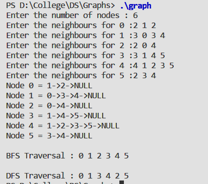

To implement a Graph using Adjacency List and perform Breadth First and Depth First Search
#include<stdio.h>
#include<stdlib.h>
struct node {
int data;
int status; struct node *next;
};
struct node *root=NULL;
void createGraph(struct node *adj[10],int n) {
struct node *last;
int m,val,d;
for(int i=0; i<n; i++) {
printf("Enter the neighbours for %d :",i);
scanf("%d",&m);
for(int j=0; j<m; j++) {
scanf("%d",&val);
struct node *temp= malloc(sizeof(struct node));
temp->data=val;
temp->next=NULL;
if(adj[i]==NULL) {
adj[i]=temp;
} else {
last->next=temp;
}
last=temp;
}
}
}
void Display(struct node *adj[10],int n) {
for(int i=0; i<n; i++) {
struct node *temp; temp=adj[i];
printf("Node %d = ",i); while(temp!=NULL)
{
printf("%d->",temp->data); temp=temp->next;
}
printf("NULL\n");
}
}
void bfs(struct node *adj[10],int n,int *parent) {
int queue[n];
int visited[n];
for(int i=0; i<n; i++) {
visited[i]=0;
}
int front,rear;
front=rear=-1;
queue[rear++]=0;
visited[0]=1;
parent[0]=-1;
while(rear!=front) {
int x=queue[front++];
printf("%d ",x);
struct node *temp=adj[x];
while(temp!=NULL) {
if(visited[temp->data]==0) {
queue[rear++]=temp->data;
visited[temp->data]=1;
parent[temp->data]=x;
}
temp=temp->next;
}
}
printf("\n");
}
void dfs(struct node *adj[10],int n,int *visited) {
struct node *temp;
visited[n]=1;
printf("%d ",n);
temp=adj[n];
while(temp!=NULL) {
if(visited[temp->data]==0) {
dfs(adj,temp->data,visited);
}
else {
temp=temp->next;
}
}
}
int main() {
int v;
printf("Enter the number of nodes : ");
scanf("%d",&v);
struct node *adj[10];
for(int i=0; i<v; i++) {
adj[i]=NULL;
}
createGraph(adj,v);
int p[v];
Display(adj,v);
printf("\nBFS Traversal : ");
bfs(adj,v,p);
int visited[10]= {0};
printf("\n");
printf("DFS Traversal : ");
dfs(adj,0,visited);
return 0;
}
